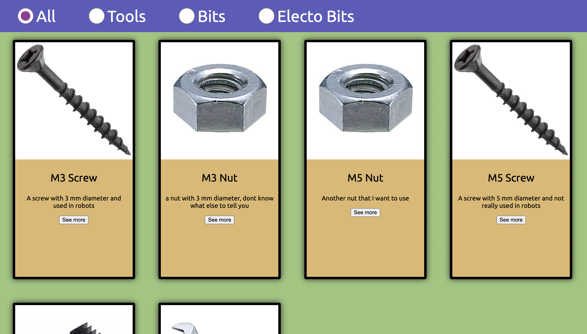
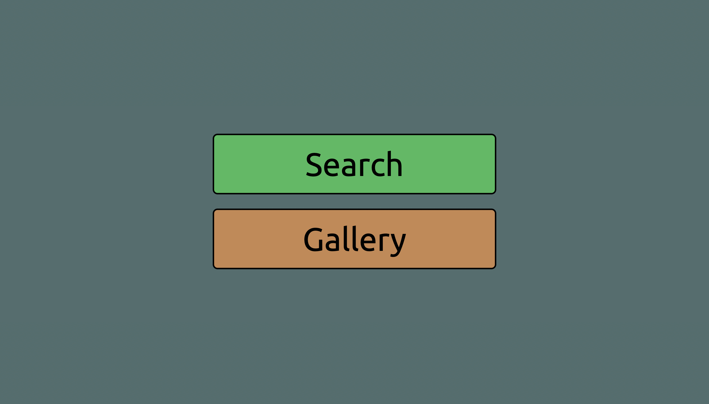
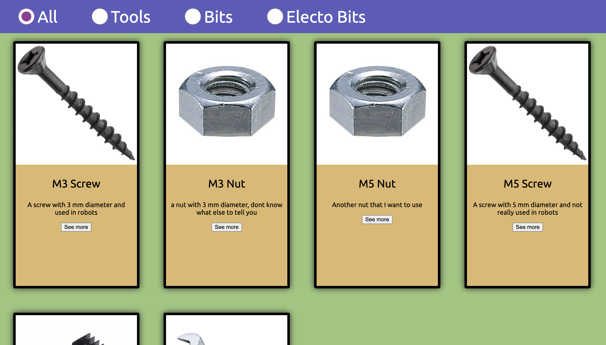
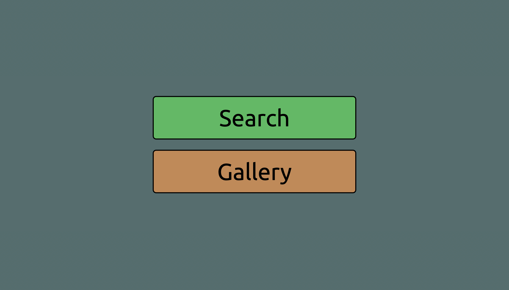

The style of the website was kind of made on the spot. But the theme or feel I was going for, was for a very simple big easy to read and understand and child-friendly theme. Like a fun website that is very plain and as simple as it can be. This is because many young students will be using this website so it is important to adapt to the customer. Also as many wil be using it as a tool to find things, it does not need to look cool but needs to be quick and fast; no content hiding behind buttons and effects.
The main stylistic choices:
-big black borders
-easy rounded corners
-easy popups
-ubuntu font
-big font & pictures & buttons
-bright colors
-simple style
 



one unit that I consistantly used throughout the website is "vw" "vh" because they are percentages of the viewport. That makes cross-platform possible and also 1 other thing is max-width and max-hieght which helps with formating